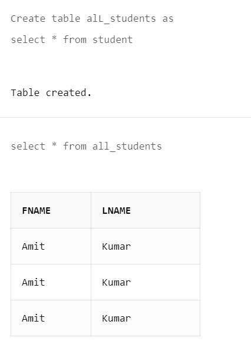

The INSERT INTO SELECT statement copies data from one table and inserts it into another table.
The INSERT INTO SELECT statement requires that the data types in source and target tables match.
INSERT INTO SELECT Syntax
Copy all columns from one table to another table:
INSERT INTO table2
SELECT * FROM table1
WHERE condition;
Copy only some columns from one table into another table:
INSERT INTO table2 (column1, column2, column3, ...)
SELECT column1, column2, column3, ...
FROM table1
WHERE condition;
